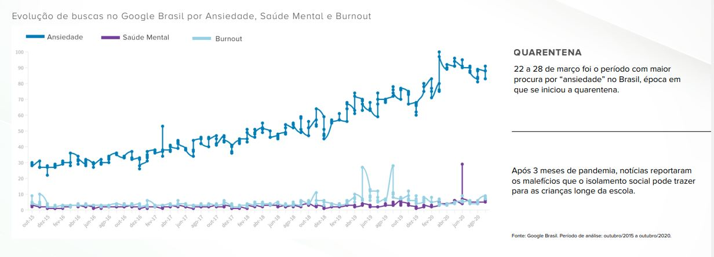
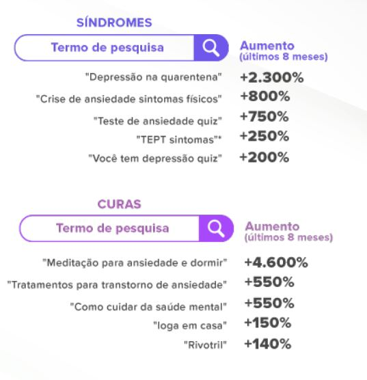

Mídias, Tecnologia e problemas de saúde
Segundo uma pesquisa da Royal Society For Public Health, a entidade filantrópica multidisciplinar do Reino Unido, dedicada majoritariamente à área de saúde, junto ao Young Health Movement, o movimento de saúde jovem, trouxeram dados alarmantes.
Em seu estudo publicado no ano de 2019 (note ser anterior a pandemia do COVID-19), já apontava que o uso excessivo de redes sociais, prejudicava a saúde mental dos jovens, desde seu sono à sua autoimagem (Freud explica: como o ser imagina a si mesmo). Os dados das pesquisas mostram que a faixa-etária de pessoas entre 14 a 24 anos, são o público que mais consome as redes sociais e, proporcionalmente é o público em que houve um aumento de 70% de casos de ansiedade e, depressão.
Discorrendo acerca disso, a pesquisa foi feita com cerca de 1.479 indivíduos
O estudo mostrou que o compartilhamento de fotos pelo Instagram impacta negativamente o sono, a autoimagem e a aumenta o medo dos jovens de ficar por fora dos acontecimentos e tendências (FOMO, fear of missing out).
O estudo consistia em montar um ranking com as redes sociais mais utilizadas e, posterior a isso, ranquear o quanto o uso dessas redes impactava a vida e saúde mental de seus usuários. O que recebeu mais avaliações negativas foi o instagram.
Sete em cada 10 voluntários disseram que o app fez com que eles se sentissem pior em relação à própria autoimagem. Entre as meninas, o efeito Instagram foi ainda mais devastador: nove em cada 10 se s sentem infelizes com seus corpos e pensam em mudar a própria aparência, cogitando, inclusive, procedimentos cirúrgicos. (RSPH,2019)
Em 2019, esse fenômeno causado pelo Instagram já era alarmante e assustador, contudo, como diz o dito popular:” nada é tão ruim que não possa piorar”. O ano de 2020 chegou e com ele, a pandemia.
Durante o período de isolamento social, a Decode, empresa focada em big data e marketing, fez uma parceria com a empresa Kronberg, de psicologia organizacional, publicaram um estudo evidenciando como o uso excessivo de tecnologia prejudica a saúde do ser.
A parceria entre Decode e Kronberg foi formada para realizar esta pesquisa com o objetivo de compreender os impactos da pandemia no trabalho e quais os próximos passos necessários no ramo empresarial.
O estudo mostrou que pesquisas sobre termos como “ansiedade” e, “burnout” tiveram um pico de 70% a mais de pesquisas e, somado ao ramo empresarial, as mulheres foram as mais afetadas

Fonte: Decode & Kronberg, 2020
Vale citar que, a busca por testes de cunho psicológicos visando a identificação de desvios psicológicos, aumentaram 750%

Fonte: Decode & Kronberg, 2020
Fontes
CARBONARI, Pâmela Instagram é a rede social mais nociva à saúde mental, diz
estudo.
Disponível em: https:
//super.abril.com.br/sociedade/instagram-e-a-rede-social-mais-prejudicial-a-saude-mental
/
. Acesso em: 21 set. 2021.
RSPH. #StatusofMind. Disponível em: https:
//www.rsph.org.uk/our-work/campaigns/status-of-mind.html. Acesso em: 21 set. 2021.
OLHAR DIGITAL. Redes sociais são a 2a maior fonte de informações sobre a pandemia.
Disponível em:
https://olhardigital.com.br/2021/05/18/internet-e-redes-sociais/redes-sociais-sao-a-2a-maior-fonte-de-informacoes-sobre-a-pandemia/.
Acesso em: 21 set. 2021.
DECODE, KRONBERG. Um olhar do digital sobre a saúde mental e o trabalho. Disponível em:
https://conteudo.decodehub.buzz/saude-mental